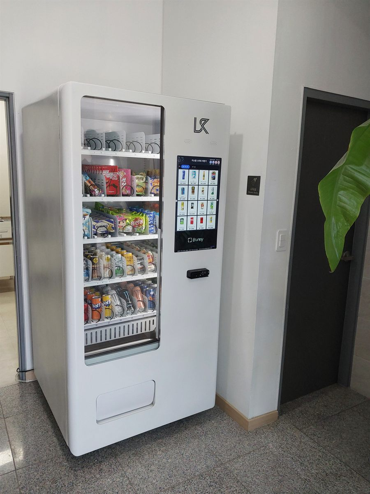

양천구 무인자판기 설치
필라테스 샤워실 앞 복도 냉장 자판기 1대

필라테스 센터의 하루는 평평하지 않습니다. 수업이 50분 단위로 끊기기 때문에, 사람이 쓰는 시간은 수업이 끝나고 다음 수업이 시작되기 전 10분에 거의 다 몰립니다. 자판기를 놓을 때도 이 10분만 보면 됩니다. 그 사이에 줄이 생기지 않고, 샤워하러 들어가는 사람과 나오는 사람이 엉키지 않아야 합니다.
이번 양천구 현장은 룸이 두 개에 샤워실과 탈의실이 복도 끝에 붙어 있는 구조였습니다. 원장님은 처음에 데스크 옆 대기 공간을 생각하고 계셨는데, 그 자리는 상담하러 온 분과 수업을 마친 회원이 겹치는 곳이었습니다. 그래서 복도 쪽으로 옮겨 잡았습니다. 왜 그렇게 정했는지부터 적겠습니다.
양천구 필라테스 센터에 맞는 구성
운동하고 나온 사람이 사는 것은 범위가 좁습니다. 물, 이온음료, 단백질 음료 이 세 가지가 대부분이고 나머지는 거의 움직이지 않습니다. 그래서 칸을 넓게 벌리지 않고 아래 두 단을 캔·병 음료로 길게 채웠습니다. 생수는 가장 손이 먼저 가는 자리에 두고, 단백질 음료는 바로 옆에 붙였습니다. 가운데 단에는 가벼운 간식을 조금만 넣었습니다. 운동 직후에는 잘 안 나가지만, 수업을 기다리는 분이나 데스크 근무자가 집어 가는 양이 꾸준히 있습니다.
자리는 샤워실 문 옆 복도 벽을 썼습니다. 문이 열리는 반경을 피해 벽을 따라 붙이고, 뒤쪽은 열이 빠지도록 조금 띄웠습니다. 결제는 카드와 간편결제만 열었습니다. 운동복 차림으로 나오는 공간이라 현금을 들고 다니는 회원이 거의 없고, 현금함은 거스름돈 관리만 늘립니다. 재고와 매출은 원격으로 보기 때문에 원장님이 매일 칸을 열어 세어 볼 필요가 없습니다.
- 기종 — 냉장 1대. 유리문 전면 진열, 오른쪽 세로 화면에서 선택·결제
- 품목 — 아래 두 단은 생수·이온음료·단백질 음료, 가운데 단은 가벼운 간식 소량
- 자리 — 샤워실 문 반경을 피한 복도 벽면, 뒤쪽 띄워 설치
- 결제·관리 — 카드·간편결제 전용, 현금함 없음, 재고·매출 원격 확인
놓고 나서 좋았던 것, 걸렸던 것
가장 체감이 컸던 것은 데스크가 조용해졌다는 점이었습니다. 그전에는 수업이 끝날 때마다 물 한 병을 찾는 분이 데스크로 오셨고, 상담 중이면 그대로 끊겼습니다. 그 걸음이 복도에서 끝나니 데스크는 상담과 예약만 보면 됩니다. 소도구를 챙겨 들고 나오는 동선 위에 있어서 따로 찾아가지 않아도 눈에 들어온다는 점도 잘 맞았습니다.
걸렸던 점도 솔직히 적습니다. 첫째, 샤워실 근처는 습기가 있습니다. 문이 자주 열리는 자리라면 몇 발짝 떨어뜨리고, 바닥에 물기가 고이지 않는지 한 번 보셔야 합니다. 둘째, 수요가 한 시간에 10분씩만 몰리다 보니 그 시간에 인기 품목이 먼저 비는 일이 생깁니다. 모든 칸을 고르게 채우기보다 생수와 단백질 음료 칸을 겹쳐 두는 편이 낫습니다. 셋째, 조용한 공간이라 냉장 압축기 소리가 신경 쓰일 수 있습니다. 룸 문과 바로 맞닿은 벽은 피하는 쪽이 안전합니다.
양천구, 이런 자리가 잘 맞습니다
양천구는 학원 상권과 주거가 겹쳐 있는 구조입니다. 목동은 학원가와 아파트 단지가 붙어 있어 낮과 저녁의 사람 흐름이 다르게 두 번 생기고, 오목교 일대는 상가가 모여 늦게까지 이어집니다. 신정동은 양천구청과 법원·검찰청이 있어 평일 낮 흐름이 안정적이고, 신월동은 주거 중심이라 저녁과 주말에 움직임이 생깁니다.
필라테스·요가원 같은 소규모 운동 공간으로 보면 회원이 샤워까지 하고 나가는 곳일수록 잘 맞습니다. 수업만 듣고 바로 나가는 곳은 머무는 시간이 짧아 한 대를 채우기 어려울 수 있습니다. 그런 경우에는 같은 건물의 학원·사무실까지 함께 쓰는 자리를 보시는 편이 낫습니다. 목동처럼 한 건물에 여러 층이 들어찬 상가라면 공용 복도에 한 대가 더 나을 때도 있습니다.
양천구 서비스 지역
목동 · 신정동 · 신월동 · 목1동 · 목2동 · 목3동 · 목4동 · 목5동 · 신정1동 · 신정2동 · 신정3동 · 신정4동 · 신정6동 · 신정7동 · 신월1동 · 신월2동 · 신월3동 · 신월4동 · 신월5동 · 신월6동 · 신월7동
양천구 전역에서 방문 상담이 가능합니다. 맞닿은 강서구·구로구·영등포구와 경기 부천시 방면도 같은 담당자가 함께 다닙니다. 지역별 안내는 양천구 무인자판기 설치 안내 페이지에서 보실 수 있습니다.
양천구 무인자판기, 이렇게 시작하시면 됩니다
전화나 상담 신청으로 건물 주소만 남겨 주시면 됩니다. 담당자가 나가서 놓을 자리의 벽면 길이와 천장 높이, 콘센트 위치, 사람 동선을 봅니다. 운동 공간은 여기에 수업이 끝나는 시간에 사람이 어디로 지나가는지를 한 가지 더 확인합니다. 그 길 위에 있으면 잘 쓰이고, 한 걸음이라도 벗어나면 잘 안 쓰입니다. 설치일이 정해지면 끝이며, 설치비는 받지 않습니다. 기계는 구입·렌탈·임대 중에서 고르실 수 있습니다.
회원 수가 많지 않아 망설여지시면 냉장 한 대로 작게 시작하는 방법이 있습니다. 두어 달 지나면 어떤 칸이 먼저 비는지 숫자로 보이고, 그때 구성을 고치면 됩니다. 처음부터 품목을 늘리기보다 보고 좁히는 쪽이 손실이 적습니다.
관련 검색어: 양천구무인자판기 · 목동자판기설치 · 신정동자판기 · 양천구필라테스자판기 · 신월동무인자판기
※ 사진은 픽프리가 시공한 설치 사례이며, 글에 적힌 지역의 현장 사진은 아닙니다.
함께 많이 찾는 키워드
양천구 무인자판기 · 양천구 자판기 설치 · 양천구 자판기 임대 · 양천구 자판기 렌탈 · 서울 무인자판기 · 서울 자판기 설치 · 목동 자판기 · 신정동 자판기 · 신월동 자판기 · 오목교 자판기 · 목동 학원가 자판기 · 양천구청 자판기 · 필라테스 자판기 · 요가원 자판기 · 운동센터 자판기 · 헬스장 자판기 · 냉장 자판기 · 생수 자판기 · 단백질음료 자판기 · 이온음료 자판기 · 스마트 자판기 · 카드 자판기 · 간편결제 자판기 · 무인키오스크 설치 · 자판기 설치비용 · 자판기 원격관리 · 자판기 설치 조건 · 무인창업